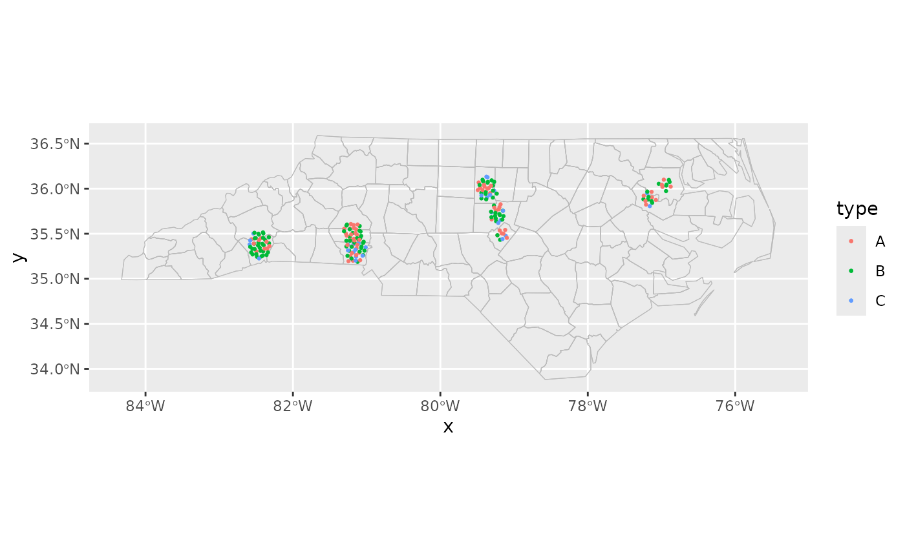

Assigns each point a longitude and latitude corresponding to the geographic
centre of its administrative area. This means that all points in the same
area will overlap. The default position uses position_circle_repel()
to repel the points outwards with an amount controllable with its
scale parameter.
Usage
geom_centroids(
mapping = ggplot2::aes(),
data = NULL,
stat = "automap_coords",
position = "circle_repel_sf",
...,
fun.geometry = NULL,
feature_type = NA,
inset = NA,
map_base = "clip",
map_inset = "auto",
na.rm = TRUE,
show.legend = "point",
inherit.aes = TRUE
)Arguments
- mapping, data, stat, position, na.rm, show.legend, inherit.aes, fun.geometry, ...
- feature_type
Type of map feature. See
feature_types()for a list of registered types. IfNA, the type is guessed based on the values infeature_names.- inset
Inset configuration; see
configure_inset(). IfNA(the default), this is inherited from the coord (seecoord_sf_inset()).- map_base
Controls the layer with the base map. Possible values are
"normal"to create a layer as though the inset were not specified,"clip"to create a layer with the inset viewport cut out, and"none"to prevent the insertion of a layer for the base map.- map_inset
Controls the layer with the inset map. Possible values are
"auto"to choose the behaviour based on whetherinsetis specified,"normal"to create a layer with the viewport cut out and transformed, and"none"to prevent the insertion of a layer for the viewport map.
Aesthetics
The location aesthetic is required.
geom_centroids() understands the same aesthetics as ggplot2::geom_point().
Examples
library(ggplot2)
cartographer::nc_type_example_2 |>
head(n = 100) |>
ggplot(aes(location = county)) +
geom_boundaries(feature_type = "sf.nc") +
geom_centroids(aes(colour = type), position = position_circle_repel_sf(scale = 6), size = 0.5) +
coord_automap(feature_type = "sf.nc")
